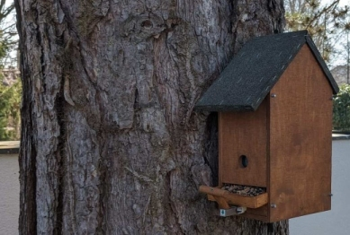

You can download my image for Birdiary from here. Compressed with 7-zip (https://www.7-zip.org/) it is between 800 and 1000 MB. I guess, 'balena etcher' (https://etcher.balena.io/) is the simplest program to burn the uncompressed image (5.2 GB) onto an SD card. Then use an SD card reader to view the boot partition. To there you have to copy two files (see in /image of this repo) :
Afterwards you can use the card to boot your (birdhouse) raspberry. Find the IP4 address in your router and use any ssh client (putty, winSCP) to log in as 'pi / bird24'. Then use a browser to look at http://the-IP4-address:8080 . If you have no sensors connected, only the webserver will stay active.
